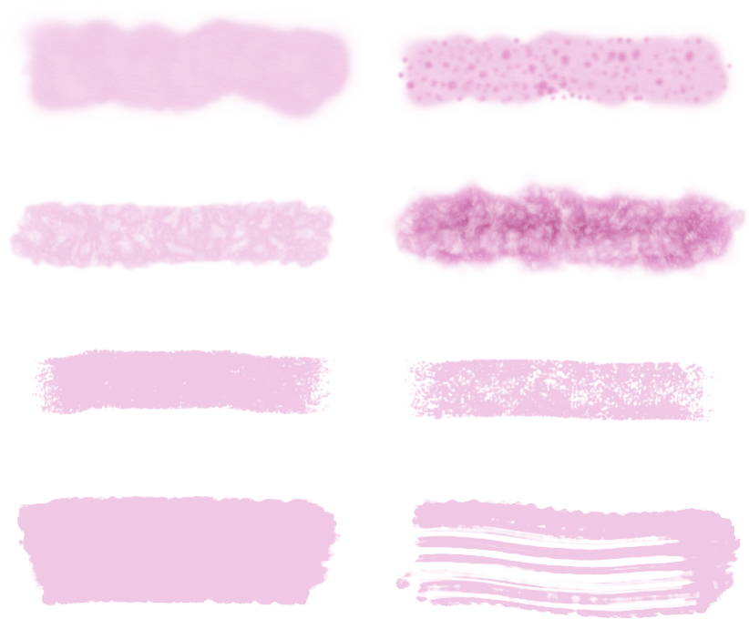

You can use Pixel Persona to add photo-realistic textures to your vector designs using pixel brushes. Alternatively, you can use basic hard- and soft-edged pixel brushes to add shadows and highlights to your work.
Before and after adding brush textures clipped to vector shapes.
Brushes
Affinity Designer provides an impressive selection of pixel brush designs for use with your Paint Brush. Each category contains brushes of varying properties and characteristics.
You can also create your own pixel brushes to assist with your design work. If you want to save a brush, these can be stored in the panel as a custom brush for future use.
Multi-brushes
This feature allows any brush to have one or more additional sub brushes attached to it. The sub brushes will draw over the top of the base brush as the stroke is applied. It is intended to introduce more nib variety, randomness and character to your brush stroke appearance (avoiding repetitive texture tiling) so the results are more varied and natural. Each sub brush can have a fully separate and customizable set of dynamics. You can control where the sub brushes are drawn on the stroke and how they blend with the main brush.
Sub-brushes can be created from an existing brush or as a new brush by accessing the Sub-brushes tab in the Brush - Editing dialog (double-click a pixel brush in the panel to view). You can drag and drop existing brushes from the same Brushes panel category directly into the tab's Sub Brushes list. Change the order in which they are added to the main brush by dragging them up or down in the list.

Single brush strokes (left) and multi-brush stroke equivalents (right). To paint pixel brush strokes:
Use the Layers panel to select the pixel layer that you want to work on, or create a new pixel layer.
From the Tools panel, select the Paint Brush.
From the Brushes panel, select a brush thumbnail of your choice. The tool uses a soft-round brush by default.
Adjust the context toolbar settings.
Select a stroke color from the Color panel.
Drag on the page in the direction that you want the brush stroke to follow.
To create symmetrical and mirrored effects:
Enabling the Symmetry option from the context toolbar allows you to produce symmetrical or mirrored drawings over one or multiple planes.
You can rotate the symmetry plane from the center of the drawing by clicking and dragging on it. Selecting will make it snap to different angles.
Click the Lock setting to lock the symmetry plane in place.
Use the live brush preview to see the direction of the symmetrical brush strokes. If the direction needs to be mirrored, check the Mirror option on the context toolbar.
If you wish to work with more than one plane of symmetry, click the numerical value box next to Symmetry and adjust the number of planes. You can use up to 16 planes in total.
With the Lock setting unchecked, you can reposition the center point of the symmetrical planes and draw symmetrical and mirrored patterns elsewhere on the page.
A dreamcatcher design with a symmetrical pattern.A dreamcatcher design with a mirrored pattern.To reposition the mirror origin:
Drag the mirror origin to position it on the page.
To smooth brush strokes as you paint:
On the context toolbar, enable the Stabilizer option and choose one of the following:
Rope mode—drag the stroke end by a 'rope' that smooths the stroke but lets you introduce sharp corners at increasing Length (radius) values by redirecting the slackened rope.
Window mode—smooths the stroke by averaging the stroke's position over a Window whose size is configurable.
 To paint pixel brush strokes:
To paint pixel brush strokes: